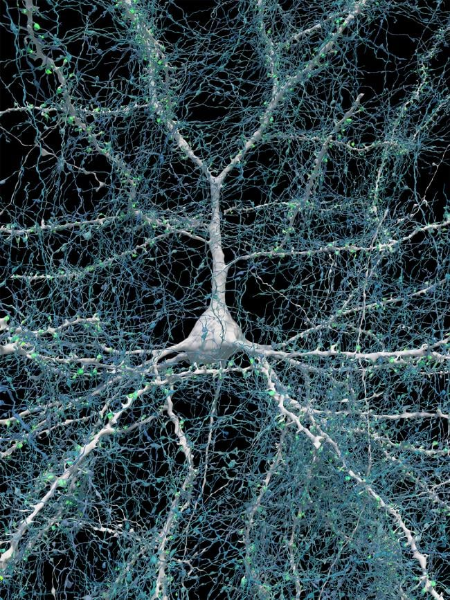

Explore em 3D um neurônio real reconstruído do conjunto H01 do córtex temporal humano. No modo AR ele acompanha sua mão.
A câmera é processada localmente no navegador. Nenhum vídeo é enviado por esta página.
O H01 reúne uma reconstrução de aproximadamente 1 mm³ de córtex temporal humano e cerca de 150 milhões de sinapses.

Crédito: Google Research & Lichtman Lab, Harvard University; rendering by D. Berger, Harvard. Imagem divulgada pelo NIH Research Matters.
O conjunto H01 inclui anotações de sinapses e conectividade.